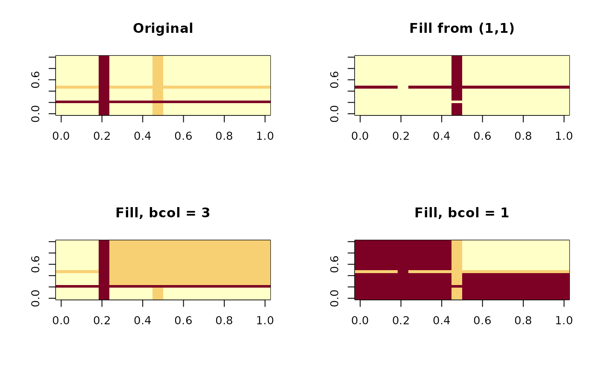
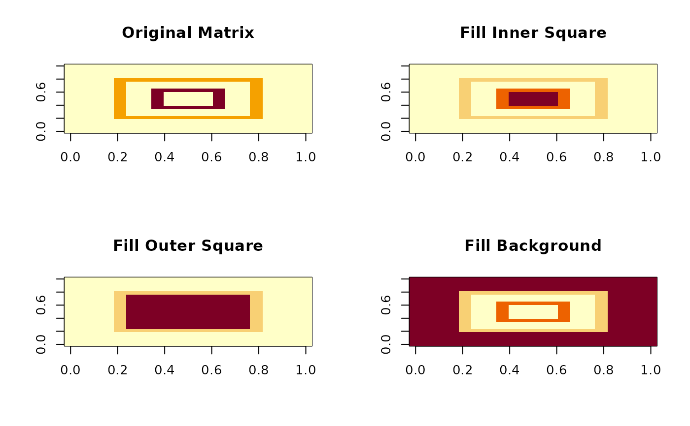
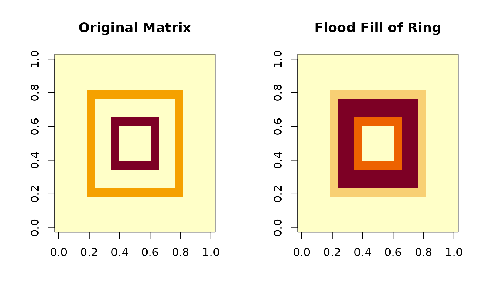
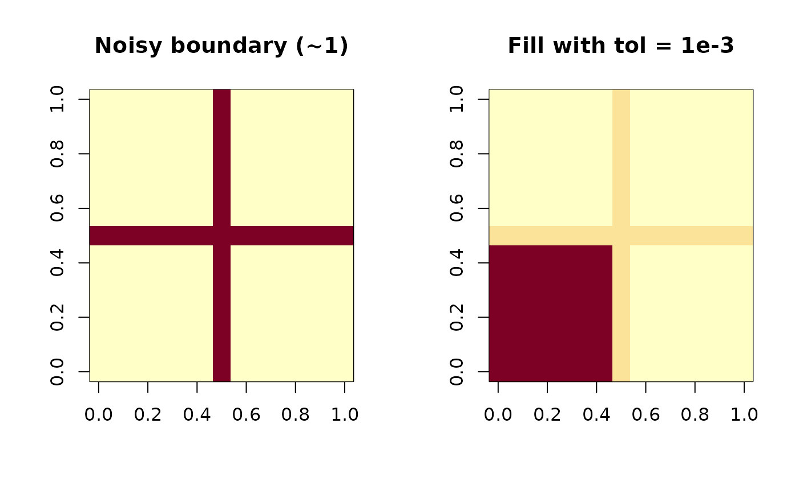

Color Fill Algorithm
seedfill.RdFills a bounded area within a numeric matrix with a given number (color), using either a boundary fill or a flood fill strategy.
Usage
seedfill(z, x = 1, y = 1, fcol = 0, bcol = 1, tol = 1e-6,
mode = c("boundary", "flood"))Arguments
- z
a matrix containing an image (double precision values are possible).
- x, y
start coordinates (row, column) of the filled area.
- fcol
numeric value of the fill color.
- bcol
numeric value of the boundar) color. Used only in
mode = "boundary". Ignored inmode = "flood".- tol
numeric value of the color comparison tolerance. As the algorithm works with double precision numbers, all color comparisons are performed with this tolerance rather than exact equality.
- mode
character string selecting the fill strategy. One of
"boundary"(the default) or"flood"; see Details.
Details
The function implements a non-recursive (stack-based) seed fill
algorithm for use in image manipulation or cellular automata. Starting
from the seed pixel at position (x, y), connected pixels are
reassigned to the fill color fcol, using a 4-connected
neighbourhood.
Two fill strategies are available via the mode argument:
"boundary"Boundary fill. The fill spreads outward from the seed and stops when it reaches pixels whose value equals the border color
bcol(withintol). This is the classical behaviour of the function and is useful when a region is delimited by a known boundary color."flood"Flood fill. The fill spreads across all connected pixels that share the original value of the seed pixel (within
tol) and stops at any pixel of a different value. In this mode the argumentbcolis ignored.
All comparisons are performed with a numeric tolerance tol, so the
function is safe to use with double precision matrices where exact equality
cannot be relied upon.
Examples
###########################################################################
## Example 1: Basic usage with crossing lines (boundary fill)
###########################################################################
# define a matrix
z <- matrix(0, nrow = 20, ncol = 20)
# draw some lines
z[10, ] <- z[, 10] <- 1
z[5, ] <- z[, 5] <- 3
# plot matrix and filled variants
par(mfrow = c(2, 2))
image(z, main = "Original")
image(seedfill(z), main = "Fill from (1,1)")
image(seedfill(z, x = 15, y = 15, fcol = 1, bcol = 3), main = "Fill, bcol = 3")
image(seedfill(z, x = 7, y = 7, fcol = 3, bcol = 1), main = "Fill, bcol = 1")

###########################################################################
## Example 2: Concentric squares (boundary fill of nested regions)
###########################################################################
# Define a matrix with two concentric square boundaries
z <- matrix(0, nrow = 20, ncol = 20)
# Outer square (border color 1)
z[5:16, 5] <- 1
z[5:16, 16] <- 1
z[5, 5:16] <- 1
z[16, 5:16] <- 1
# Inner square (border color 2)
z[8:13, 8] <- 2
z[8:13, 13] <- 2
z[8, 8:13] <- 2
z[13, 8:13] <- 2
par(mfrow = c(2, 2))
image(z, main = "Original Matrix")
# Fill the innermost region, stopping at the inner boundary (2)
image(seedfill(z, x = 10, y = 10, fcol = 3, bcol = 2),
main = "Fill Inner Square")
# Fill the ring between the squares, stopping at the outer boundary (1)
image(seedfill(z, x = 6, y = 6, fcol = 3, bcol = 1),
main = "Fill Outer Square")
# Fill the background, stopping at the outer boundary (1)
image(seedfill(z, x = 1, y = 1, fcol = 3, bcol = 1),
main = "Fill Background")

###########################################################################
## Example 3: Flood fill mode (stop at ANY differing value)
###########################################################################
## In "flood" mode the boundary color is irrelevant: the fill spreads
## across all connected cells that share the seed cell's original value
## and stops as soon as a different value is encountered. This is handy
## when a region is defined by its own interior value rather than by a
## dedicated boundary color.
z <- matrix(0, nrow = 20, ncol = 20)
# Outer square (value 1) and inner square (value 2) as before
z[5:16, 5] <- 1; z[5:16, 16] <- 1; z[5, 5:16] <- 1; z[16, 5:16] <- 1
z[8:13, 8] <- 2; z[8:13, 13] <- 2; z[8, 8:13] <- 2; z[13, 8:13] <- 2
par(mfrow = c(1, 2))
image(z, main = "Original Matrix")
# The ring between the two squares consists of zeros. A flood fill seeded
# there fills only that ring, stopping automatically at BOTH the value-1
# and value-2 boundaries -- no need to specify multiple boundary colors.
image(seedfill(z, x = 6, y = 6, fcol = 3, mode = "flood"),
main = "Flood Fill of Ring")

###########################################################################
## Example 4: Double precision values with tolerance
###########################################################################
## The algorithm compares colors using the tolerance 'tol', so it works
## with non-integer (double precision) matrices.
z <- matrix(0.0, nrow = 15, ncol = 15)
z[8, ] <- z[, 8] <- 1.000001 # a slightly noisy boundary value
par(mfrow = c(1, 2))
image(z, main = "Noisy boundary (~1)")
# A generous tolerance treats 1.000001 as the boundary value 1
image(seedfill(z, x = 3, y = 3, fcol = 5, bcol = 1, tol = 1e-3),
main = "Fill with tol = 1e-3")
